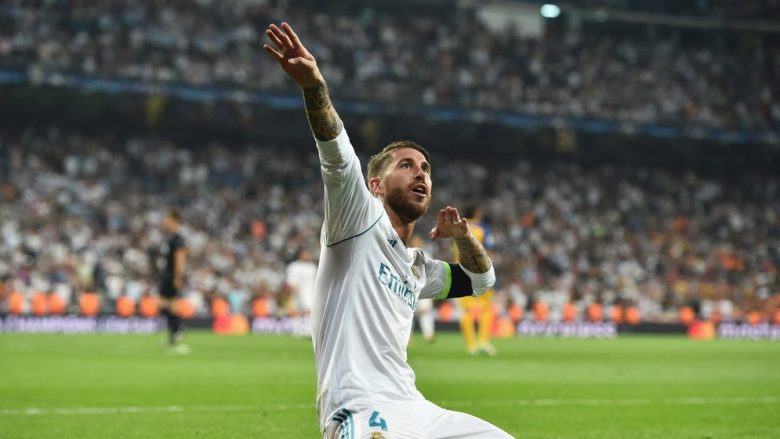

|
Chelsea ka gati ofertën e lartë për Skriniarin, sllovaku mund të bëhet mbrojtësi më i shtrenjtë në historiChelsea është gati të bëjë një ofertë të ‘çmendur’ për ta transferuar mbrojtësin Milan Skriniar. Por klubi italian mund ta humbas lojtarin i cili është tunduar nga milionat e ekipeve angleze. E përditshmja italiane Tuttosport ka shkruar se Chelsea është gati ta bëjë Skriniarin mbrojtësin më të shtrenjtë në histori të futbollit. |

United planifikon të paguajë klauzolën e Pellegrinit Roma duhet të nxitojë për t’i vazhduar kontratën mesfushorit të tyre Lorenzo Pellegrini. Klubi italian është në bisedime tash e disa kohë me përfaqësuesit e lojtarit për të gjetur një marrëveshje të re. |

Sevilla do ta blejë përfundimisht Andre Silvan Sevilla do të ushtrojë mundësinë e tyre prej 30 milionë eurosh për të nënshkruar përfundimisht me sulmuesin Andre Silva, pavarësisht se Milani dëshiron që sulmuesi të rikthehet. Drejtori i klubit Andaluzian, Joaquin Caparros, ka siguruar tifozët e klubit që do të nënshkruajnë me reprezentuesin e Portugalisë përkundër dëshirës së Rossonerëve. |

Sergio Ramos dështoi në testin e dopingut në finalen e Ligës së Kampionëve Kapiteni i Real Madridit, Sergio Ramos, është kthyer në titujt e gazetave, por jo për arsye që njihet. Duket se mbrojtësi i Los Blancos ka shkelur rregullat e anti-doping të UEFA-s. |
| Copyright © 2018 Gr.2 - All Rights Reserved | Website by Gr-2 |
{kind=link}